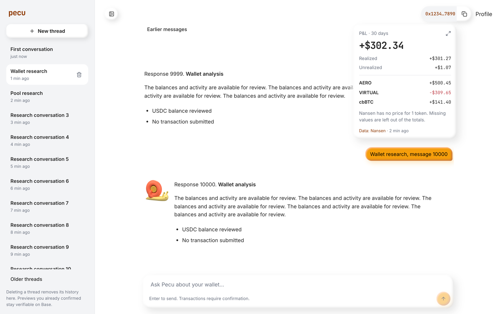
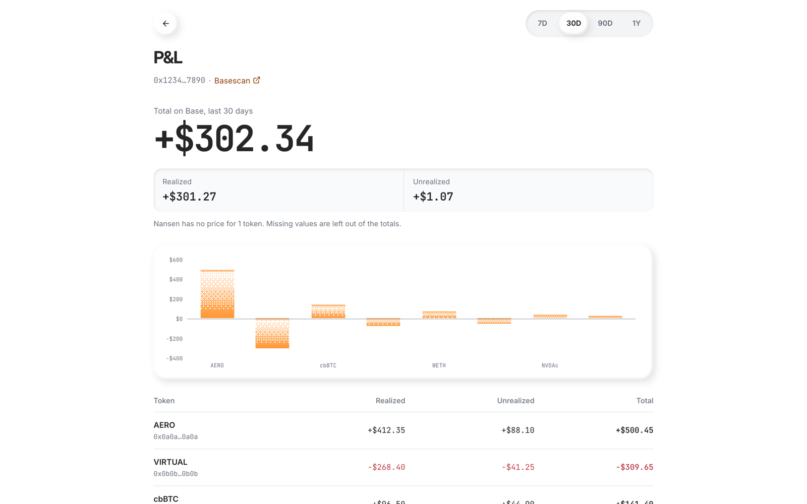
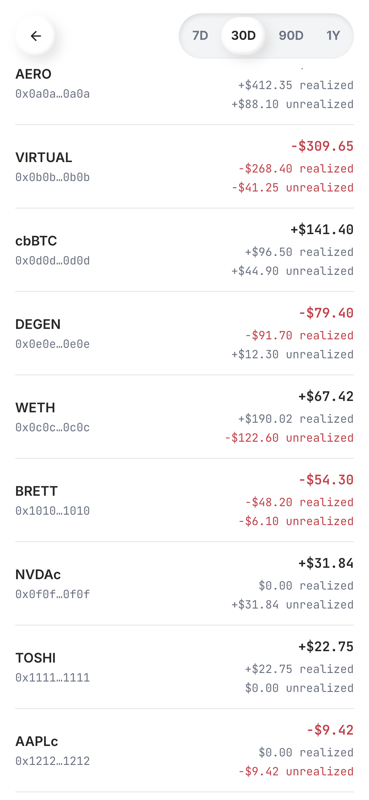

Live on pecu.app/agent since 23 September 2026.
#pnl with 7D, 30D, 90D and 1Y. It shows the total, a realized/unrealized split, bars for the eight largest movers and every token.

The Durable Object reads Nansen profiler/address/pnl for the signed-in sender's own wallet on Base. Neither the browser nor the model picks the address. Each wallet and period is cached for ten minutes, so hovering again does not spend a credit. If a refresh fails, the last read comes back with its original time. Tokens Nansen cannot price stay visible as Unavailable and are left out of the totals, with a note saying how many.
#pnl.Screenshots and the video use fictional fixture data.

Commits on main, not pushed:
061e8cfa Aero tile palette and animated mark (another agent's uncommitted work)d6f2139c Polymarket public reads (another agent's uncommitted work)5ded96f7 wallet P&L41ae8e88 "last year" label for 1YDeployed: basedbot, aero-stocks, pecu-app. The Codex, EVM and Aero workers had no changes.
The Stocks page still links its address to Basescan. It uses the separate Aero Stocks design, so it was left alone.